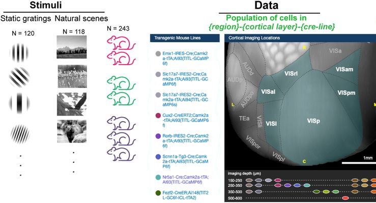

Data-Driven Discovery of Computational Principles in Naturalistic Brain and Behavior
In the era of large-scale neural recordings, rich behavioral assays, and high-dimensional computational models, data-driven discovery stands out as a critical paradigm for uncovering hidden mechanisms of cognition and brain function. Rather than solely testing narrowly-defined hypotheses, leveraging unsupervised or weakly-supervised methods allows us to explore the latent structure in complex neural and behavioral datasets, and thereby uncover computational principles or algorithms that were not anticipated a priori.
In Natural Scene Coding Consistency in Genetically-Defined Cell Populations, I advance this data-driven paradigm by introducing Inter-Individual Representational Similarity (IIRS)—a metric that quantifies how consistently genetically-defined cell populations encode naturalistic stimuli across individual animals. Analyzing responses from over 43,000 neurons in the Allen Brain Observatory, I show that inhibitory populations (VIP, SST, PV) exhibit robust, stimulus-selective coding consistency for natural scenes, while excitatory populations show layer-specific variations. Parallel analyses of deep neural networks reveal the same principle: representational similarity across random initializations increases when networks process naturalistic stimuli. Together, these results demonstrate how population-level, data-driven analysis can uncover shared computational principles across brains and models, highlighting the power of discovery-based approaches in modern neuroscience.
